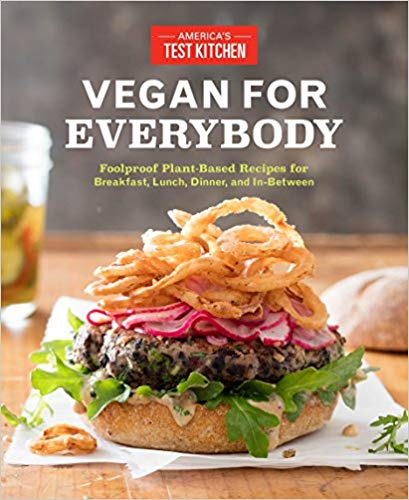

Spiced Lentil Salad with Winter Squash

I made this with my sister-in-law Emily while I was visiting in Port Angeles. She does the shopping, I do the chopping. Emily rating: delicious!
The Baked Brownie

I've been making these for years, but mostly recently brought them to a movie night at Macaria's (she's from Ada too)!
Curried Lentil, Tomato, and Coconut Soup

This is so easy and good for when it starts to turn colder. 10/10 would recommend eating.